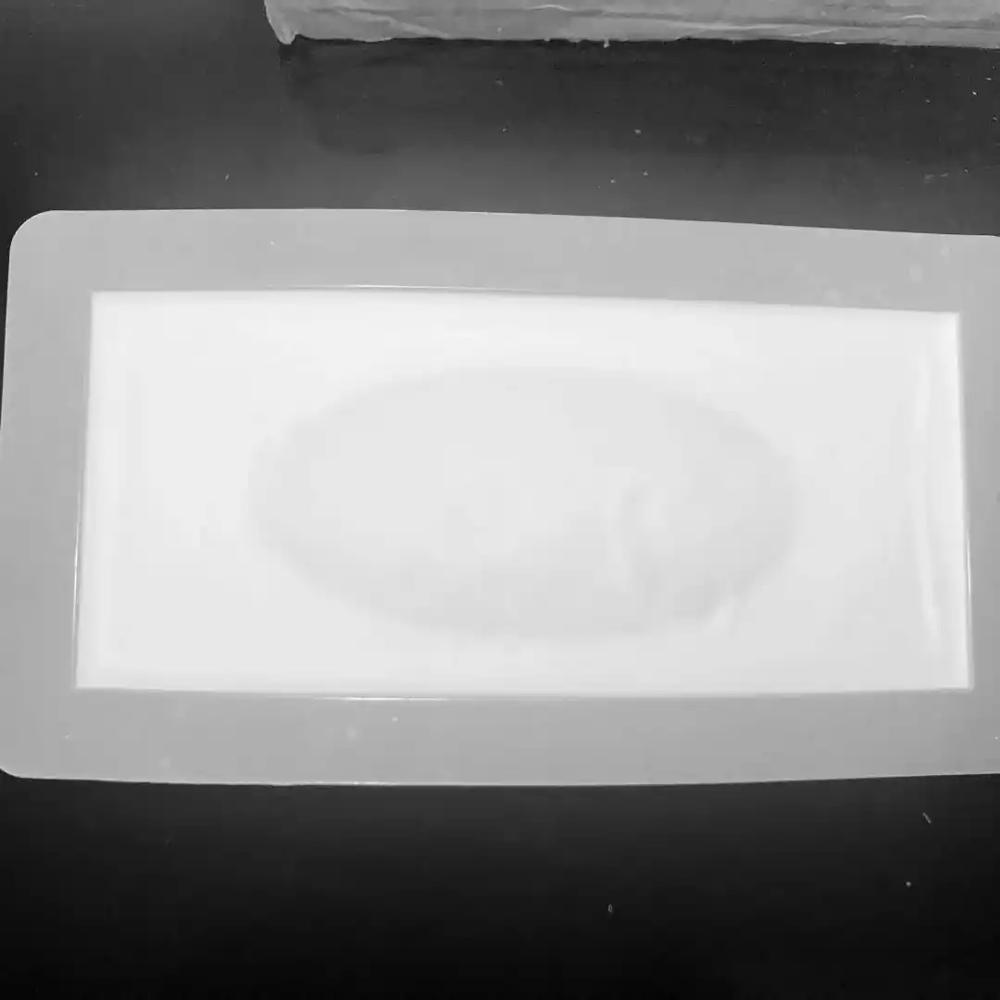
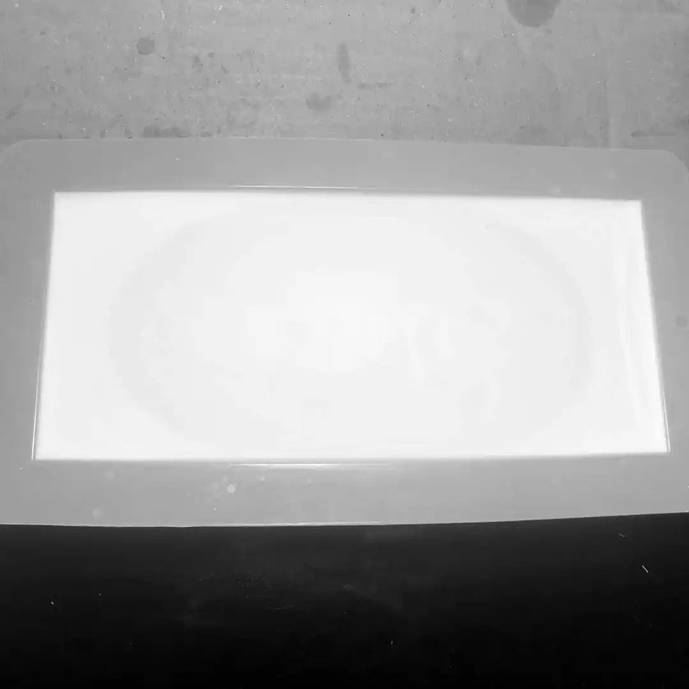
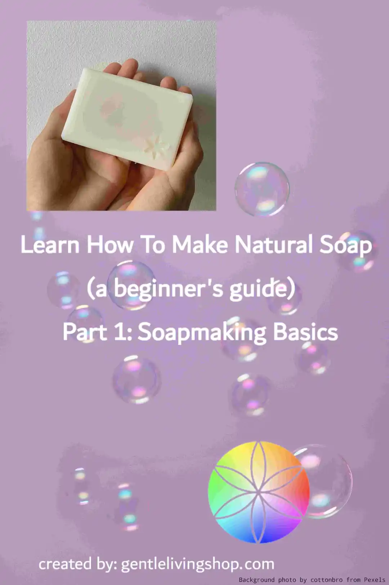

Soapmaking Basics | Part 1: Learn How to Make Natural Soap!

Welcome to Part 1 of our beginner’s guide to soapmaking series! Links to other parts of the series and for PDF download will be at the bottom of this page. Enjoy!
In this section, we will cover (click to go there):
-
Science of soapmaking
- Saponification
- Superfat
-
Water in soapmaking
- Hard water
- Soft water
-
Methods of soapmaking
- Cold process
- Hot process
- Melt and pour
-
Stages of soap
- Emulsification
- Trace
- Traditional soapmaking
- Lye safety *very important!*
Science of Soapmaking
Soap is made by a process of combining oils with an alkali, which is called saponification (SAP). The two different alkalis used to make soap are called lye — sodium hydroxide (NaOH) and potassium hydroxide (KOH). NaOH creates solid bars of soap and KOH creates liquid soap.
Saponification
During saponification, lye will turn a specific amount of oils into soap. Therefore, the amount of lye used in making a batch of soap is precise because too much lye will make soap irritating and not enough lye will result in unsaponified oils, which in large amounts tend to go rancid in storage. The amount of lye needed is calculated using the oil’s saponification value (SAP value). Each type and brand of oil has its own SAP range, which is then used to calculate into two SAP values respectively for NaOH and KOH.
Superfat
As excess lye is not desirable in a soap, it is vital to have superfat in a recipe. It is an extra amount of oils added to the recipe without changing the amount of lye. This is also known as a lye discount — using less lye in a recipe where amounts of oils stay the same. Having superfat in the recipe will almost always guarantee a non-irritating soap. What’s more, increasing superfat in a recipe will make soap more moisturising whereas decreasing superfat values will make soap more cleansing.
Read on Page 5 about how to calculate and work with SAP values and superfat.
Water in Soapmaking
Water is a vital part of a soap recipe as lye needs to be dissolved in water before use. To completely dissolve lye crystals, it is a must to use the same amount of water in weight or more.
The type of water used will also affect the quality of soap.
- Hard water is water with high levels of dissolved minerals; an example would be ground water. The dissolved minerals result in a soap that is hard to lather and leaves chalky residues (soap scum) in sinks. Minerals in hard water also shorten the lifespan of soaps making them go rancid quicker.
- Soft water such as rain water has low levels of dissolved minerals. It is more suitable for soapmaking as soaps will lather well.
A simple way to know whether you have hard tap water is by checking for any white chalky residues on the kettle or water faucets. Distilled water is often used instead when tap water is hard. Chelators such as citric acid can also be used to counter hard water. They bind with metals in water to suppress their activities hence reducing soap scum and help to lengthen the shelf life of soaps made with hard water.
Read more about water: https://inmysoappot.co.nz/2019/10/05/lets-talk-about-water/
Methods of Soapmaking
Cold process soapmaking
Cold process soapmaking does not involve any extra heat added in the process. Heat is still generated during saponification. This method is perfect for creating intricate patterns as the batter can be poured into moulds at various viscosities and textures. It usually takes under an hour to make but the finished cold process soap requires 4+ weeks of curing to allow its alkalinity to drop and soap to harden.
Hot process soapmaking
Hot process soapmaking involves ‘cooking’ the soap on low heat. The heat speeds up the saponification process to produce a saponified thick batter in an hour or two if using a stick blender. Because of its thickness when poured into moulds, hot process soap has a more rustic look. It can be used immediately after setting, but a week of curing will help to harden it up and last longer. This method produces softer soaps compared to cold process. It tends to dissolve faster when in contact with water.
Melt and por soaps
Melt and pour soaps are made by melting pre-made soap blocks and adding fragrances and colours then letting it set. It is the only method that does not involve lye hence it is suitable as an activity to do with children.
Stages of Soap
What happens during the soapmaking process? After you combine oils with lye that has been dissolved in water, here are the stages it goes through to become soap as we know it:
Stage 1 — Emulsification
Emulsification is when oils are well-blended with lye solution where you won’t be able to see oil trails when stirring. There should be no more free oils floating atop the surface. Opacity and colour of batter is even and the same throughout. This is the earliest stage where you can pour the batter into moulds without oil and lye separating.
Stage 2 — Trace
The degree of trace is more of a spectrum than distinct stages. It is separated into three main parts — light, medium and thick. Different soapers have their own version of trace stages. Develop your own ‘sense of trace’ to help you work better according to what pattern you want to create and when to add particular additives into the soap batter.
- Light trace: when you lift your blending tool up, soap dripping down from tool should draw a thin trail on top of the batter but immediately disappears.
- Medium Trace: when you lift your blending tool up, soap dripping down from tool should draw a trail that is more raised on top of the batter and does not immediately disappear. You can tap the container to make the soap trail disappear.
- Thick trace: pudding-like texture, you are able to scoop up batter in big quantities and it becomes more difficult to even out the surface.
Note on false trace and seizing:
- False trace is when soap batter appears to be thick but it has not yet reached emulsification. This is due to hard oils solidifying when in contact with cold lye solution.
- Seizing is when soap goes beyond thick trace to a point where it is difficult to transfer into moulds. It is possible to soften seized soap with heat but it would be not viable to do designs with it.
Stage 3 — Gel Phase
This stage happens after soap has been poured into moulds for cold-process whereas hot-process soaps go through gel phase during making. During this stage, soap heats up to more than 80ºC due to saponification. The final soap will become more translucent and have darkened colours as a result of gel phase. In cold-process soap:
- To aid this phase in taking place: insulate soap mould with towels.
- To avoid this phase: place soap mould in the fridge for a few hours.


Be aware! Because the temperatures get so high during saponification, soaps with certain ingredients have a tendency to ‘volcano’. So it is important to choose whether to insulate/cool down soaps intently.
For visual references on different stages of soap: video on: Trace, emulsion, false trace, acceleration in cold process soap and also read thisarticle on Knowing Your Trace in Soap.
Modern versus Traditional Soapmaking
Many tutorials of cold and hot process soapmaking you find will involve using a stick blender. But soaps have been around for thousands of years, it is only recently when people stared to incorporate modern technologies in the making process. Traditional soapmaking uses the hot-process and cold-process. The main difference is that soapers back in the day would stir the batter for hours (with breaks in between!) until emulsion. Stick blender is therefore not a necessity in soapmaking — only a tool to save you time. So if you are just starting out and do not want to invest in a stick blender, you can dedicate a few hours for making a batch of soap and really see the whole process of soap forming in real-time. There is a beauty in hand stirring soap that stick blenders cannot match! If you have wood ash at home, you can also make your own lye from it.
Learn more about traditional soapmaking: traditionl cold process castile soap and also traditional hot process .
❗ An Important Note on Lye Safety
Lye is corrosive, meaning it can cause chemical burns and severe injuries if handled incorrectly. It is vital that you take the following safety procedures when handling lye:
- Prevent eye and skin contact
- Prevent inhalation of fumes
- Wash contaminated skin and remove contaminated clothes immediately
- ALWAYS add lye to water
- Do not operate near children or pets
- Always store lye in an appropriate and sealed container in a safe place
- Lye is a hazardous waste, do not pour lye down the drain or throw it in the rubbish bin.
In the event of contact…
- Eyes: Immediately wash the eyes. Get medical attention immediately.
- Skin: Immediately flush the skin with water (NOT vinegar). Seek medical attention if necessary.
- Difficulty breathing: Get respiratory support. Ingestion: Rinse mouth. Do NOT induce vomiting. Drink plenty of water. Get medical attention immediately.
Read more about proper tools for lye and safe handling in Part 3 of this guide.
Thank you for reading! Hope you learned something new!
Check out all the posts in our soapmaking for beginner’s guide:
